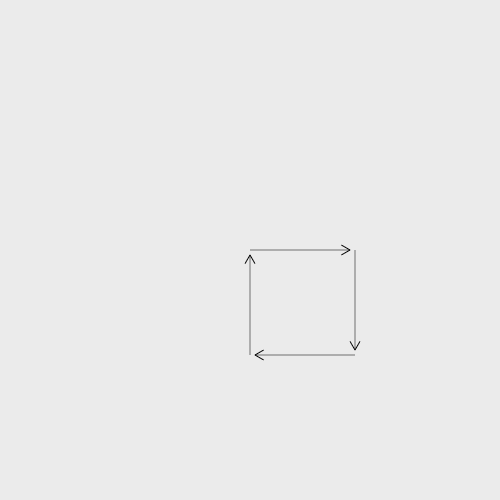

Turtle-Programmierung mit Clerk
Dominikus Herzberg, Technische Hochschule Mittelhessen
Bei der Programmiersprache Logo steht eine Schildkröte (turtle)
im Mittelpunkt -- und zwar im wahrsten Sinne des Wortes. Auf einer
weißen Fläche ist in der Mitte die Schildkröte platziert. An ihr ist ein
Stift befestigt und sie ist zu Beginn nach rechts ausgerichtet, sie
blickt Richtung Osten.
Die Schildkröte kennt die folgenden Kommandos:
| Befehl |
Bedeutung |
pendown() |
Setze den Stift auf die Zeichenfläche (Anfangseinstellung) |
penup() |
Hebe den Stift von der Zeichenfläche ab |
forward(distance) |
Bewege dich um distance vorwärts |
backward(distance) |
Bewege dich um distance rückwärts |
right(degrees) |
Drehe dich um die Gradzahl degrees nach rechts |
left(degrees) |
Drehe dich um die Gradzahl degrees nach links |
Mit diesen Kommandos wird die Schildkröte über die Zeichenfläche
geschickt. Wenn man Abfolgen von diesen Kommandos programmiert, kann man
teils mit sehr wenig Code interessante Zeichnungen erstellen.
Wenn man die Befehle in der JShell zur Verfügung hat, benötigt man
kein weiteres Wissen zu Logo. Man kann mit den Sprachkonstrukten von
Java arbeiten.
Beispiel 1: Ein Quadrat aus Pfeilen
Mit new Turtle(300,300) wird eine neue Schildkröte
mittig auf eine Zeichenfläche der angegebenen Größe (Breite, Höhe)
gesetzt. In den Grundeinstellungen sind die Breite und die Höhe auf 500
gesetzt.
Die folgende Logo-Anwendung demonstriert, wie man mittels Methoden
schrittweise graphische Einheiten erstellen und zusammensetzen kann.
Turtle myFirstTurtle = new Turtle(300,300);
Turtle arrowhead(Turtle t) {
return t.right(30).backward(10).forward(10).
left(60).backward(10).forward(10).right(30);
}
Turtle arrow(Turtle t, double length) {
return arrowhead(t.forward(length));
}
Turtle edge(Turtle t, double length, double space) {
return arrow(t, length).penUp().forward(space).penDown();
}
myFirstTurtle = edge(myFirstTurtle, 100, 5).right(90);
myFirstTurtle = edge(myFirstTurtle, 100, 5).right(90);
myFirstTurtle = edge(myFirstTurtle, 100, 5).right(90);
myFirstTurtle = edge(myFirstTurtle, 100, 5).right(90);

Das Ergebnis sieht dann so aus: ein Quadrat aus Pfeilen, wobei absichtlich kleine Zwischenräume gelassen wurden.
Beispiel 2: Umsetzung eines Logo-Programms in Java
Die Programmiersprache Logo ist nicht so schwer zu verstehen, wie das nachstehende Beispiel zeigt, das von dieser Webseite stammt. Auch wenn man kein Logo spricht, der Code ist leicht in Java umzusetzen.
TO tree :size
if :size < 5 [forward :size back :size stop]
forward :size/3
left 30 tree :size*2/3 right 30
forward :size/6
right 25 tree :size/2 left 25
forward :size/3
right 25 tree :size/2 left 25
forward :size/6
back :size
END
clearscreen
tree 150
Turtle turtle = new Turtle().left(90);
void tree(Turtle turtle, double size) {
if (size < 10) {
turtle.forward(size).backward(size);
return;
}
turtle.forward(size / 3).left(30);
tree(turtle, size * 2.0 / 3.0);
turtle.right(30);
turtle.forward(size / 6).right(25);
tree(turtle, size / 2.0);
turtle.left(25);
turtle.forward(size / 3).right(25);
tree(turtle, size / 2.0);
turtle.left(25);
turtle.forward(size / 6).backward(size);
}

Die Java-Methode tree bildet das obige Logo-Programm
nach; lediglich aus praktischen Überlegungen lasse ich den
Rekursionsabbruch etwas früher greifen.
Der Aufruf der Methode tree erzeugt etwas, was einem "Baum" ähnelt.
-- We are done!